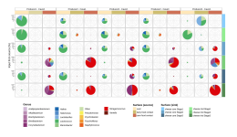

<!DOCTYPE html>

<html>
  <link rel="stylesheet" href="css/style.css"></link>
</html>
   <!--  green=#93cf53  blue=#476ed7  -->

<header class="cabecera-rectangulo">
<div style="display: flex; align-items: center; gap: 0px;">
<!-- <a href="https://portalcientifico.unileon.es/grupos/8577/detalle" target="_blank">
  
</a>
<a href="https://www.unileon.es/" target="_blank">

</a>
 -->
<div class="navbar-flex">
<button class="btn-title" onclick="location.href='index.html'">NEWTEC-Unileon Bioinformatic Pipelines</button>
<div class="dropdown">
  <button>Genomics</button>
  <div class="dropdown-content">
    <a href="#">Basic_workflow - illumina</a>
    <a href="#">Basic_workflow - nanopore</a>
    <a href="phylogenomics.html">Phylogenomics</a>
  </div>
</div>
<div class="dropdown">
  <button>Metagenomics</button>
  <div class="dropdown-content">
    <a href="#">Basic_workflow</a>
    <a href="#">Taxonomy - read level</a>
    <a href="img src=images/LOGO_OFICIAL.svg" width="150" height="125">Strain analysis - read level</a>
    <a href="source_tracker2_piechart.html">SourceTracker analysis</a>
    <a href="#">Resistome - read level</a>
    <a href="#">Resistome - contig level</a>
  </div>
</div>
<div class="dropdown">
  <button>Other analysis</button>
  <div class="dropdown-content">
    <a href="#">Integron metabarcoding</a>
    <a href="#">ARG-capture - Nanopore</a>
    <a href="#">16SrRNA metataxonomy</a>
  </div>
</div>
<div class="dropdown">
  <button>R-plots</button>
  <div class="dropdown-content">
    <a href="#">Taxonomy basic analysis</a>
    <a href="#">ARG-contig plots</a>
    <a href="#">Basic heatmap plot</a>
    <a href="#">Complex heatmap plot</a>
  </div>
</div>
</div> <!--para cerrar navbar-flex-->
</div> <!--para cerrar display flex-->
</header>

<!--Colorear cuando haya código bash-->
<script src="https://cloudflare.com"></script>
<script>new ClipboardJS('.copy-button');</script>

<script>
function copyCode(button) {
    // Busca el texto dentro del bloque <code>
    const code = button.parentElement.querySelector('code').innerText;
    
    // Copia al portapapeles
    navigator.clipboard.writeText(code).then(() => {
        // Feedback visual: cambia el texto del botón temporalmente
        const originalText = button.innerText;
        button.innerText = '¡Copiado!';
        button.classList.add('copied'); // Opcional: para estilos CSS
        
        setTimeout(() => {
            button.innerText = originalText;
            button.classList.remove('copied');
        }, 2000);
    }).catch(err => {
        console.error('Error al copiar:', err);
    });
}
</script>

<h1 id="piecharts_tax_st2">piecharts_tax_st2</h1>
<p>This pipeline was designed to transform the output files from SourceTracker2 pipeline (<a href="https://github.com/biota/sourcetracker2">https://github.com/biota/sourcetracker2</a>) into piecharts figure where the size of the pie indicates the percentage of source contribution to each sink, while the colors within the pie indicates the contribution per taxa. The image below is a example of this kind of figure, extracted from <a href="https://link.springer.com/article/10.1186/s40168-024-01790-4">Alexa et al. 2024</a> </p>
  <!--style="border: 25px solid white; display: block; padding: 0;"> --->

<p>All scripts employed for this pipeline are availabe at <a href=https://github.com/JoseCoboDiaz/piecharts_tax_st2">https://github.com/JoseCoboDiaz/piecharts_tax_st2</a> and they can be downloaded by:</p>
  <div class="code-container">
   <button class="copy-button" onclick="copyCode(this)">Copy</button>
   <pre><code>wget https://github.com/JoseCoboDiaz/piecharts_tax_st2.git</code></pre>
   </div>

   <p>The first step is run sourcetracker2 with <i>--per_sink_feature_assignments</i>, remember that as a <i>.biom</i> format is need to run SourceTracker2, you can transform your <i>.txt</i> abundance matrix by adding <i># Constructed from biom file</i> at first line, and <i>#OTU ID</i> as the header of first column. Samples have to been represented by columns while taxa are represented by rows, using the total count matrix (not transformed to percentage). So, after this modifications, SourceTracker2 can be run by:</p>
  <div class="code-container">
   <button class="copy-button" onclick="copyCode(this)">Copy</button>
   <pre><code>sourcetracker2 -i matrix_abundance.txt -m metadata_pie.txt -o st2_output/ --jobs 32 --per_sink_feature_assignments</code></pre>
  </div>
<p>where metadata_pie.txt is a 3 column matrix with <i>Sample ID</i>, <i>SourceSink</i> and <i>Env</i> as headers.</p>

<p>After that, the obtained matrices has to been filtered to keep those taxa with highest influence on SourceTracker analysis, by run these scripts (the first one is only to fix format issues):</p>
<div class="code-container">
<button class="copy-button" onclick="copyCode(this)">Copy</button>
<pre><code>ruby 00.quote_header.rb        
ruby 01.auto_recalculate.rb</code></pre>
</div>

<p><em>*</em> The cut-off selected for chose taxa is 0.5%, if you want to change it modify the line 11 of <i>01.recalculate_st2.R</i></p>

<p>Now, we need to extract the list of taxa with importance among all the samples analyzed, to re-run the <i>auto_recalculate</i> script taking all these taxa: </p>
<div class="code-container">
<button class="copy-button" onclick="copyCode(this)">Copy</button>
<pre><code>ruby 00.quote_header.rb        
ruby 01.auto_recalculate.rb
</code></pre>
/div>

<p>So now, we are ready to extract the info in a matrix for further plot in R:</p>
<div class="code-container">
<button class="copy-button" onclick="copyCode(this)">Copy</button>
<pre><code>ruby 03.organize_data_pie.rb
Rscript 04.piechart.R
</code></pre>
</div>

<p>Of course, any modifications on the R-script for plot piechart can be done to change colors, figure format or whatever you want or need.</p>

<p>Enjoy!</p>
